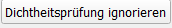

Dokumentation zum Dichtheitsprüfung-Checker¶
Laden von Dichtheitsprüfungen¶
Bevor alle weiteren Funktionen verwenden werden können, müssen die .sew-Dateien der Dichtheitsprüfungen geladen werden. Durch Klicken auf den Button kann zum gewünschten Ordner navigiert werden. Durch anschließendes Klicken auf Dichtheitsprüfungen laden werdn die einzelnen Dateien ausgelesen und die Tabelle befüllt.
Ignorieren von Prüfungen¶
Die Funktion steht nur zur Verfügung, wenn kein Filter für die Datenprüfung gewählt wurde. Duch das Markieren einer Zeile bzw. Zelle der entsprechenden Zeile und anschließendem klicken auf  wird die gewählte Prüfung in der laufenden Bearbeitung ignoriert. Durch erneutes Laden aller .sew-Dateien steht sie wieder zur Verfügung. Die Aktion kann nicht rückgängig gemacht werden.
Erzeugen von Punkten aus GPS-Koordinaten¶
Nach dem die Prüfungen eingelesen wurden können Punkte auf Basis der gespeicherten GPS-Koordinaten erzeugt werden. Das Koordinatensystem kann dabei vom Benutzer definiert werden. Wird ein Layer mit Stammdaten geladen, so wird automatisch dessen Koordinatensystem in also Voreinstellung gewählt.
Verknüpfen von Stammdaten¶
Optional können weitere Prüfungen durchgeführt werden, indem Stammdaten und Excel-Listen geladen werden.
Wichtig ist, dass die Haltungsbezeichnung eindeutig ist.
Zur inhaltlichen Prüfung können die Dichtheitsprüfungen mit den Stammdaten der Haltung verknüpft werden. Dafür muss der entsprechende Layer in QGis geladen sein. Durch die Auswahl des Layers können anschließend die Attributnamen zugewiesen werden. Wichtig ist, dass die Bezeichnung der Haltung gewählt wird. Die Haltungslänge wird aus der Geometrie des Layers ermittelt, sofern kein Attribut zugewiesen wurde.
Verwenden eines Filter-Ausdrucks
Wenn kein Filter angegeben ist, dann werden nur jene Haltungen geladen, für die eine Dichtheitsprüfung vorhanden ist. Um die Vollständigkeit der Dichtheitsprüfungen zu kontrollieren, kann ein Filter gesetzt werden. Die optional geladenen Exce-Listen werden als full-join mit den Dichtheitsprüfungen verknüpft. Alle Einträge der Listen sind somit in der geladenen Tabelle enthalten.
Wenn ein Filterausdruck definiert wurde, dann werden Haltungen und Dichtheitsprüfung mittels eines full-joins verknüpft. Wird für eine Haltung keine passende Prüfung gefunden, ist sie trotzdem in der Tabelle ersichtlich. Wenn zusätzlich noch Excel-Listen geladen werden, dann werden diese als left-join verknüpft: Sollte eine Haltung in einer Excel-Liste vorhanden sein, aber weder im gefilterten Haltungslayer, noch in den Dichtheitsprüfungen, so scheint sie auch nicht in der Tabelle auf.
Beispiel: Im Filter werden alle Misch- und Schmutzwasserhaltungen im Gebiet ‚West‘ gewählt. (Gebiet = ‚West‘ and Kanalart in (‚KM‘,‘KS‘)) In der Excel-Liste, in der die Haltungsinspektion dokumentiert wurde, sind auch Regenwasserhaltungen enthalten. Diese scheinen sind in der angezeigten Liste nicht enthalten.
{kind=link}
Laden von verknüpften Daten¶
Wenn entweder Stammdaten oder eine Excel-Liste definiert wurden, können Daten mit dem Button geladen werden. Durch das laden werden weitere Prüfungen im Dropdown Datenprüfung ermöglicht.
{kind=link}